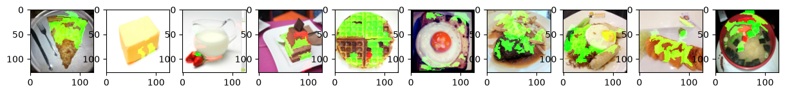
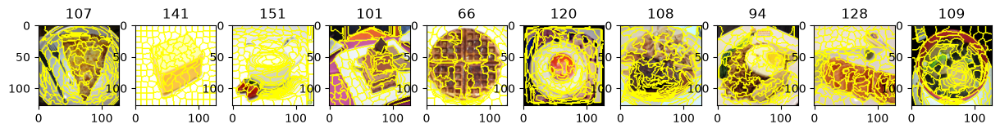
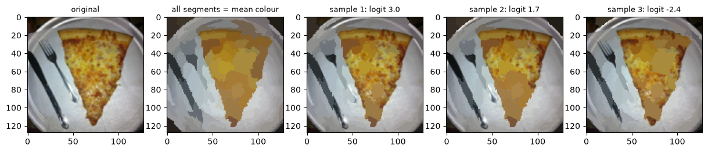
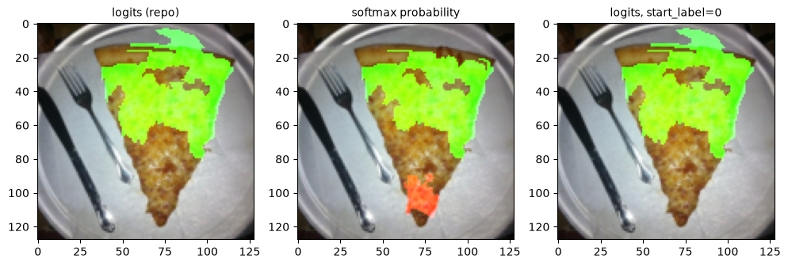
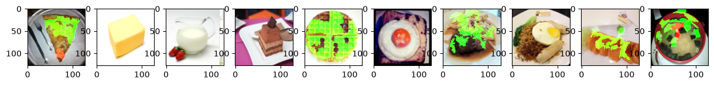

2.1 起點：lime.png
第 0 章 0.5 節執行 explain_cnn.py 後，stdout 的第 4 行是 saved ./output/lime.png。這是五種方法的第一張結果圖，也是本章的主角：

lime.png：LIME 對 10 張圖各自的解釋。被染成亮綠色的區域是「支持模型判斷」的 superpixel，紅色是「反對」的。由左到右是圖 0 到圖 9，類別順序和第 1 章 1.3 節的表相同。先只用眼睛看：大部分的圖上都有幾塊亮綠色的不規則區域，例如圖 0 的披薩上半部、圖 4 的鬆餅、圖 7 炒麵的左半邊。紅色很少見，最明顯的是圖 9 碗的上方那一小塊。兩張 Dairy product（圖 1 奶油塊、圖 2 牛奶壺）上色的面積很小，圖 1 只有奶油右下方一小片，圖 2 幾乎看不出來。
讀完本章，你要能回答這張圖背後的幾個問題：那些不規則的區域是怎麼切出來的？「支持」與「反對」是怎麼算出來的？為什麼每張圖最多只上色 11 塊？為什麼圖 1、圖 2 看起來幾乎沒有上色，實際上卻有好幾塊被標成紅色？
關於作業題目：投影片第 7 頁只寫了三件事：安裝 lime 套件（指定 pip install lime==0.1.1.37）、lime 的 GitHub 網址、一個參考連結。Q1–4 的題目本身在 Gradescope 上，不在 repo 裡（第 0 章 0.1 節〈30 題在問什麼〉），所以本書不逐題作答，而是把回答這類問題需要的觀念與觀察講清楚。本 repo 用的是 lime 0.2.0.1，不是投影片指定的 0.1.1.37；兩個版本對圖 0 跑出的結果完全相同，目錄頁的〈第一層〉已經說明過，這裡不重複。
2.2 LIME 的想法：遮住一塊，看分數怎麼變
LIME 是 Local Interpretable Model-agnostic Explanations 的縮寫，出自 Ribeiro 等人 2016 年的論文。名字裡的三個字各有意思：
- Model-agnostic（不挑模型）：LIME 只需要一個「給輸入、吐分數」的函式，不需要知道模型內部長什麼樣，也不需要梯度。對它來說，我們的 CNN 就是一個黑盒子。這和第 3–5 章的方法很不一樣：那些方法都要對輸入取梯度，必須打開模型。
- Interpretable（看得懂）：LIME 不直接解釋 128 × 128 × 3 = 49,152 個像素值，而是先把圖切成一百多個小塊，每一塊只問「留著」或「遮掉」兩種狀態。解釋的單位是這些小塊。
- Local（局部）：整個 CNN 是極度非線性的函式，沒有辦法用一條直線描述。但如果只看「這一張圖附近」，也就是只在這張圖上遮遮掩掩，就可以用一個簡單的線性模型去近似它。這個近似只對這一張圖成立，換一張圖就要重新算一次。
這種「用一個簡單模型在局部模仿複雜模型」的做法，稱為代理模型（surrogate model）。LIME 的代理模型是線性的：每一塊一個權重，權重越大，代表留著這一塊時模型的分數越高。所以權重為正的塊「支持」這個類別（畫成綠色），權重為負的塊「反對」（畫成紅色）。
整個流程畫成圖如下。explain_cnn.py 自己只寫了兩個小函式（切塊用的 segmentation、跑模型用的 predict），其餘步驟都在 lime 套件裡：
接下來 2.3 節先讀 explain_cnn.py 的程式，2.4–2.7 節依圖上的編號，一步一步看每個步驟實際做了什麼、圖 0 的數字是多少。
2.3 lime_explain 的程式
LIME 段落從一段 docstring 開始，它是原版 notebook 的 Markdown 儲存格搬過來的，只交代 lime 是什麼套件：
"""# Lime (Q1~4)
[Lime](https://github.com/marcotcr/lime) is a package about explaining what machine learning classifiers are doing.
"""接著是 lime_explain 的前半段，兩個內部函式，就是圖 2.2 裡的 ① 和 ④：
def lime_explain(model, images, labels):
def predict(input):
# input: numpy array, (batches, height, width, channels)
model.eval()
input = torch.FloatTensor(input).permute(0, 3, 1, 2)
# pytorch tensor, (batches, channels, height, width)
output = model(input.cuda())
return output.detach().cpu().numpy()
def segmentation(input):
# split the image into 200 pieces with the help of segmentaion from skimage
return slic(input, n_segments=200, compactness=1, sigma=1, start_label=1)predict 是 lime 說的 classifier_fn：lime 會把一批「遮過的圖」用 NumPy 陣列交給它，形狀是 (批次, 高, 寬, 通道)，也就是第 1 章講過的 HWC 排法。第 43 行做兩件事：torch.FloatTensor(...) 把 NumPy 的 float64 轉成 PyTorch 的 float32，permute(0, 3, 1, 2) 把通道換到第 1 維，變成模型要的 (N, C, H, W)。第 45 行搬上 GPU、送進模型，第 46 行把結果拿回 CPU、轉回 NumPy 交還給 lime。第 42 行的 model.eval() 每呼叫一次就設一次，多餘但無害（第 1 章 1.7 節：這是每個解釋方法開頭都會做的保險）。
值得注意的有兩點：
- 回傳的是 logits。第 45 行的
model(...)直接就是最後一層 Linear 的輸出（第 0 章 0.2 節），沒有經過 softmax。lime 的文件預期classifier_fn回傳的是每一類的機率。這件事的影響在 2.8 節實測。 - 沒有
torch.no_grad()。所以每次 forward，PyTorch 都會記錄計算過程，準備給一個永遠不會發生的 backward；第 46 行的.detach()是在記錄之後才把結果切斷。這只浪費記憶體與時間，不影響數值：本書用一段包了torch.no_grad()的程式重跑圖 0（2.6 節的指令），結果和explain_cnn.py裡同一張圖完全相同。
segmentation 是 lime 說的 segmentation_fn：給一張 HWC 的圖，回傳一張同樣高寬的整數陣列，每個像素標上它屬於第幾塊。第 50 行用 scikit-image 的 slic，2.4 節細看。第 49 行註解說「切成 200 塊」，這只是目標，實際並不是 200；最後一個參數 start_label=1 則是 2.9 節差一錯誤的源頭。（註解裡的 segmentaion 是原版的拼字，程式照原樣保留。）
然後是主迴圈：
fig, axs = plt.subplots(1, len(images), figsize=(15, 8))
# fix the random seed to make it reproducible
np.random.seed(16)
for idx, (image, label) in enumerate(zip(images.permute(0, 2, 3, 1).numpy(), labels)):
x = image.astype(np.double)
# numpy array for lime
explainer = lime_image.LimeImageExplainer()
explaination = explainer.explain_instance(image=x, classifier_fn=predict, segmentation_fn=segmentation)第 52 行開一張 1 列 10 欄的畫布，和第 1 章畫 images.png 的寫法相同。第 54 行固定 NumPy 的亂數種子，2.10 節再談它管到哪裡、管不到哪裡。第 55 行先把 (10, 3, 128, 128) 的張量 permute 成 (10, 128, 128, 3) 再轉 NumPy，因為 lime 吃 HWC；zip 讓每一圈同時拿到一張圖和它的標籤（標籤是 0 維的張量，所以後面要 .item()）。第 56 行轉成 float64（np.double）。
第 58–59 行是重點：每張圖新建一個 LimeImageExplainer，呼叫 explain_instance，只給了三個參數：圖、predict、segmentation。其他參數全部用預設值，而預設值決定了 LIME 的行為。以下是 lime 0.2.0.1 的預設值（本書讀 lime 套件的原始碼 lime_image.py 確認；lime 不在本 repo 裡，安裝後在 Python 的套件目錄下）：
| 參數 | 預設值 | 意思 |
|---|---|---|
num_samples | 1000 | 每張圖產生 1000 個樣本（含原圖本身） |
batch_size | 10 | 每湊滿 10 個樣本呼叫一次 predict，所以每張圖呼叫 100 次 |
top_labels | 5 | 只替原圖分數最高的 5 個類別算解釋 |
hide_color | None | 被遮的塊換成那一塊自己的平均色 |
distance_metric | 'cosine' | 用 cosine 距離衡量樣本和原圖有多像 |
LimeImageExplainer(kernel_width=…) | 0.25 | 距離換成樣本權重時的寬度（2.6 節） |
LimeImageExplainer(random_state=…) | None | 用 NumPy 的全域亂數（2.10 節） |
變數名稱 explaination 也是原版的拼字。它是一個 ImageExplanation 物件，裝著每塊的權重；2.7 節看它怎麼變成圖。
2.4 ① 切塊：superpixel
目錄頁用一句話介紹過 superpixel：LIME 把圖切成的小塊。更完整地說，superpixel 是一群位置相鄰、顏色相近的像素，被當成一個整體處理。把 16,384 個像素（128 × 128）合併成一百多塊，有兩個好處：解釋的單位變少，人看得懂；而且一塊通常對應圖上某個有意義的區域（餅皮、盤子邊緣），比單一像素更像「人會說的理由」。
slic 是 SLIC（Simple Linear Iterative Clustering）演算法的實作。它的做法類似 k-means 分群：先在圖上均勻撒下大約 n_segments 個中心點，然後反覆把每個像素分給「顏色和位置綜合起來」最近的中心，再更新中心。三個參數的意思：
n_segments=200：想切幾塊。這只是撒中心點時的目標，實際塊數由演算法收斂的結果決定。compactness=1：顏色和位置誰比較重要。值越大，位置越重要，塊就越接近整齊的方格；值越小，顏色越重要，塊就越貼著顏色邊界、形狀越不規則。1 是偏小的值。sigma=1：分群前先用寬度 1 的高斯模糊把圖抹平一點，減少雜訊造成的破碎小塊。
實際切出幾塊？在 HW09/ 裡跑下面這段（只用到 scikit-image 與 food/，不需要 GPU，也不需要 checkpoint）。它用和 explain_cnn.py 相同的方式讀圖、轉成 HWC 的 float64，再呼叫同樣參數的 slic：
$ ../.venv/bin/python -c "
import numpy as np
from skimage.segmentation import slic
from dataset import FoodDataset, get_paths_labels
paths, labels = get_paths_labels('./food/')
images, labels = FoodDataset(paths, labels, mode='eval').getbatch(range(10))
for i, image in enumerate(images.permute(0, 2, 3, 1).numpy()):
s = slic(image.astype(np.double), n_segments=200, compactness=1, sigma=1, start_label=1)
print(i, len(np.unique(s)), s.min(), s.max())
"實測輸出（欄位：圖編號、塊數、最小編號、最大編號）：
0 107 1 107 «1»
1 141 1 141
2 151 1 151 «2»
3 101 1 101
4 66 1 66 «3»
5 120 1 120
6 108 1 108
7 94 1 94
8 128 1 128
9 109 1 109- 1圖 0 切出 107 塊，編號從 1 到 107。編號從 1 開始，這就是
start_label=1的作用。本章的例子都用圖 0，記住這兩個數字：107 塊、編號 1..107。 - 2最多的是圖 2，151 塊。
- 3最少的是圖 4（鬆餅），只有 66 塊。10 張圖的塊數在 66 到 151 之間，沒有一張是 200。
每塊有多大？128 × 128 = 16,384 個像素分給一百多塊，平均一塊一百多個像素。本書另外量了每塊的像素數：圖 0 最小的一塊 43 個像素、中位數 127、最大 667；其他圖每塊的最小值在 41–47、中位數在 96–150 之間。例外是圖 4：最大的一塊有 2,985 個像素（中位數 139），佔了整張圖的六分之一以上，所以它只切出 66 塊。

圖 2.3 看得出 compactness=1 的效果：在食物上，塊的邊界沿著顏色變化彎來彎去，形狀很不規則。圖 1 的白色背景則被切成接近方格的小塊：背景幾乎沒有顏色差異，能拿來分群的只剩位置，結果就退回成均勻的格子。這也預告了一件事：背景佔了很多塊，而這些背景塊在 LIME 眼裡和食物上的塊地位相同，都是一個特徵。
切塊這一步沒有任何亂數：同一張圖每次切出來都一樣。2.9 節還會用到一個實測：把 start_label=1 改成 0，切出來的是同一個分割，只是每一塊的編號整體減 1（圖 0 變成 0..106，逐像素比對「改後的編號 + 1 等於原本的編號」全部成立）。
2.5 ②③④ 取樣 1000 次：遮掉一半，看 logit 怎麼變
切好塊之後，lime 把每一塊當成一個特徵，n 塊就是 n 個特徵。一個樣本就是一個長度 n 的 0/1 向量：第 z 個位置是 1，代表第 z 塊保持原樣；是 0，代表把那一塊「遮掉」。本書讀了 lime 0.2.0.1 的原始碼（lime_image.py），explain_instance 的取樣是這樣做的：
- 用 NumPy 的亂數產生一個 1000 × n 的矩陣，每個元素各自獨立、各有一半機率是 0 或 1。
- 把第 0 列整列設成 1：第 0 個樣本就是原圖，什麼都沒遮。所以「1000 個樣本」是 1 張原圖加 999 張隨機遮過的圖。
- 對每一列，把值為 0 的塊換成「遮住用的圖」上同一個位置的像素，得到一張新的圖。
- 每湊滿
batch_size=10張就呼叫一次predict，把模型的輸出收集起來。
第 3 步的「遮住用的圖」很重要：hide_color=None（預設）時，lime 事先把每一塊都換成那一塊自己的 RGB 平均色，做成一張「全部都是平均色」的圖。所以「遮住」不是塗黑，而是把一塊的細節抹平成一個單色。看圖 0：

第 2 格說明了「換成平均色」的意思：披薩還是一塊三角形的黃褐色，盤子還是灰白色，但起司的紋理、叉子的細節都沒了。樣本 1–3 則是一半保留、一半抹平的拼貼。原圖的 Bread logit 是 10.333（10 張一起算的值，第 1 章 1.6 節），三個樣本掉到 2.970、1.749、−2.365：只是把一半的塊抹平，模型對「麵包」的分數就掉了 7 到 13。
本書重播了 explain_instance 的亂數，重建圖 0 的 1000 個樣本（並核對過和真正傳進 predict 的 1000 張圖完全相同）。統計結果：
- 每次大約遮一半：除了第 0 個樣本，每個樣本被遮的塊數最少 36、平均 53.6、最多 72。107 塊各有一半機率被遮，平均正好是一半左右。LIME 不是一次遮一小塊，而是每次都把整張圖抹掉一半。
- Bread 的 logit 掉得很兇：1000 個樣本上，最小 −21.274、中位數 −4.030、最大 10.333（就是原圖本身）。換成機率，p(Bread) 的中位數只有 0.0009；仍然 ≥ 0.99 的樣本只有 5.2%，≤ 0.01 的有 62.3%；遮完之後模型仍然預測成 Bread 的，只有 18.3%。
- predict 被呼叫 100 次，每次拿到 10 張
(128, 128, 3)的圖（2.6 節的指令會印出來）。
第 0 章 0.5 節說，執行 explain_cnn.py 時 stderr 會出現 10 條數到 1000/1000 的 tqdm 進度條。現在可以完整解釋：explain_instance 預設會顯示取樣的進度，一張圖一條、每條數 1000 個樣本，10 張圖就是 10 條。本書另外計時，每張圖約 1.3–1.6 秒（圖 1 是 2.81 秒）；第 0 章 0.5 節的逐段計時量到 LIME 整段 14.7 秒。
10 張圖：遮掉一半之後，模型還認得出來嗎
同樣的統計對 10 張圖都做一次（照原程式的順序，同一個 seed 16 連續跑，所以樣本就是 explain_cnn.py 實際用的那些）。表裡的 logit 都是標籤那一類的：
| 圖 | 原圖 logit | 樣本 logit 最小 | 樣本 logit 中位數 | p(標籤) 中位數 | p ≥ 0.99 的樣本 | p ≤ 0.01 的樣本 | 仍預測正確 |
|---|---|---|---|---|---|---|---|
| 0 Bread | 10.33 | −21.27 | −4.03 | 0.0009 | 5.2% | 62.3% | 18.3% |
| 1 Dairy product | 19.79 | 18.84 | 21.38 | 1.0000 | 100% | 0% | 100% |
| 2 Dairy product | 7.81 | 7.32 | 10.30 | 1.0000 | 100% | 0% | 100% |
| 3 Dessert | 9.01 | 3.95 | 8.94 | 1.0000 | 99.3% | 0% | 100% |
| 4 Dessert | 12.21 | −2.60 | 6.67 | 0.9997 | 62.4% | 16.1% | 75.5% |
| 5 Egg | 12.39 | 1.38 | 6.69 | 0.9999 | 95.5% | 0% | 99.8% |
| 6 Meat | 22.96 | −9.18 | 8.30 | 1.0000 | 82.3% | 5.8% | 88.8% |
| 7 Noodles/Pasta | 11.45 | −60.85 | −24.08 | 0.0000 | 0.2% | 96.2% | 1.4% |
| 8 Seafood | 13.01 | −11.18 | 3.16 | 0.8570 | 43.2% | 34.3% | 55.5% |
| 9 Soup | 14.12 | −6.51 | 4.47 | 0.7799 | 31.5% | 15.6% | 59.2% |
這張表把 10 張圖分成很不一樣的幾群，後面幾節會一再回來看它：
- 圖 1、2、3、5：機率頂住了。遮掉一半，p(標籤) 幾乎都還在 0.99 以上（95.5% 到 100% 的樣本）。從機率看，遮哪幾塊都沒差。但 logit 仍在變：圖 1 的樣本 logit 從 18.84 到中位數 21.38，圖 3 最小掉到 3.95。這就是第 1 章 1.8 節預告的：看機率分不出哪一塊重要，看 logits 還分得出來。
- 圖 0、7：遮一半就認不出來。圖 7 的炒麵只剩 1.4% 的樣本預測正確，樣本 logit 最低到 −60.85。
- 圖 1、2：遮了反而更確定。兩張 Dairy product 的樣本 logit 中位數（21.38、10.30）都高於原圖（19.79、7.81）。把一些塊抹成平均色，模型反而更相信這是乳製品。記住這件事，2.7 節會看到它在解釋圖上的樣子。
原圖 logit 一欄是 lime 取樣時算的：原圖和 9 個遮過的樣本同一批送進模型，取 2 位小數。它和第 1 章「10 張一起算」是不同的批次，所以小數第 2–3 位不保證相同（第 1 章〈同一張圖，logit 的小數第 3 位會變〉）。
2.6 ⑤⑥ 加權 Ridge 回歸：每一塊一個權重
現在手上有 1000 組資料：每組是一個 0/1 向量（哪幾塊沒遮）和模型的 11 個 logit。LIME 的最後一步，是對某一個類別，找一組權重 w0, …, wn−1 和截距 b，讓下面這條直線盡量貼近模型：
這就是代理模型。wk 的意思是：在這個近似裡，第 k 塊從「遮掉」變成「保留」，logit 平均上升多少。因為擬合的對象是 logit，權重的單位也是 logit。擬合有兩個細節：
樣本的權重：越像原圖越重要
LIME 要的是「原圖附近」的近似，所以遮得少、比較像原圖的樣本要比較重要。它先算每個樣本的 0/1 向量和原圖（全 1 向量）的 cosine 距離：1 減掉兩個向量夾角的 cosine，方向越一致距離越小，完全相同是 0。再用核函數（kernel，一個把距離換成 0 到 1 之間權重的函數：距離 0 時是 1，距離越大越接近 0）把距離換成樣本權重。注意這裡的「樣本權重」是每個樣本一個，用來決定擬合時誰比較重要；它和最後畫成綠／紅的「每塊的權重」是兩回事：
kernel_width）對 0/1 向量，這個距離有簡單的形式。一個保留 k 塊的樣本，和全 1 向量的 cosine 是 k ÷ (√k · √n) = √(k ÷ n)。圖 0 平均遮掉 53.6 塊、保留約 53.4 塊，手算 d ≈ 1 − √(53.4 ÷ 107) ≈ 0.29，樣本權重 ≈ 0.50。實測的中位數是 d = 0.296、權重 0.496，對得上。遮得最多的樣本（72 塊）d = 0.428、權重 0.231；遮得最少的（36 塊）d = 0.185、權重 0.760；原圖本身 d = 0、權重 1。所以 LIME 對樣本的偏好並不極端：最像原圖的樣本，分量也只是最不像的 3 倍左右。
Ridge：加一點懲罰的線性回歸
有了樣本權重，lime 用 scikit-learn 的 Ridge 回歸（alpha=1）擬合。Ridge 是一般的最小平方法再加一項懲罰：要最小化的是「誤差平方和 + alpha × 每塊權重的平方和」，權重越大，懲罰越多，讓權重不要為了貼合雜訊而變得很誇張；alpha 就是懲罰的強度，0 時退回普通的最小平方法。「加權」則是每個樣本的誤差平方先乘上它的樣本權重再加總。
擬合的好壞用 R²（決定係數）衡量：1 減掉「殘差平方和 ÷ 總變異」（殘差是直線預測和真實 logit 的差；總變異是真實 logit 離它們平均值的平方和），代表 logit 的變化有多少比例被這條直線解釋了。1 是完美擬合，0 代表直線不比「永遠猜平均值」好。lime 在這裡算的是加權的 R²（每一項平方先乘上樣本權重），存在 exp.score。
還有一個細節：top_labels=5 讓 lime 只替原圖分數最高的 5 個類別各擬合一次，每個類別得到自己的一組權重與截距，存在 exp.local_exp[類別] 與 exp.intercept[類別]。但 exp.score 只有一個值：5 個類別的迴圈每一圈都會覆寫它，最後留下的是最後一圈，也就是原圖分數最高的那一類。本作業 10 張都預測正確（第 1 章），所以 exp.score 剛好就是標籤那一類的 R²。如果某張圖預測錯了，它就變成「預測類別」的 R²，而不是標籤的。
實際跑一次圖 0
下面的指令重現 explain_cnn.py 對圖 0 的那一次 explain_instance：同樣的 predict（多包了 torch.no_grad()，並用 calls 記下每次被呼叫時拿到的形狀）、同樣的 segmentation、同樣的 seed 16，而圖 0 是迴圈的第一張，所以亂數狀態也相同。和 2.4 節一樣在 HW09/ 裡跑（../.venv 是第 0 章 0.3 節建立的環境）。它要載入模型，需要 GPU、checkpoint.pth 與 food/。最後的 2>/dev/null 把 stderr 丟掉，也就是把 tqdm 進度條藏起來：
$ ../.venv/bin/python -c "
import numpy as np, torch
from skimage.segmentation import slic
from lime import lime_image
from model import Classifier
from dataset import FoodDataset, get_paths_labels
model = Classifier().cuda()
model.load_state_dict(torch.load('checkpoint.pth')['model_state_dict'])
model.eval()
paths, labels = get_paths_labels('./food/')
images, labels = FoodDataset(paths, labels, mode='eval').getbatch(range(10))
calls = []
def predict(input):
calls.append(input.shape)
with torch.no_grad():
return model(torch.FloatTensor(input).permute(0, 3, 1, 2).cuda()).cpu().numpy()
def segmentation(input):
return slic(input, n_segments=200, compactness=1, sigma=1, start_label=1)
np.random.seed(16)
x = images[0].permute(1, 2, 0).numpy().astype(np.double)
exp = lime_image.LimeImageExplainer().explain_instance(image=x, classifier_fn=predict, segmentation_fn=segmentation)
print(len(calls), calls[0])
print(exp.top_labels)
print([(int(s), round(float(w), 3)) for s, w in exp.local_exp[0][:5]])
print(round(exp.score, 4))
w = dict(exp.local_exp[0])
print(len(w), round(w[0], 3), 107 in w)
" 2>/dev/null實測輸出：
100 (10, 128, 128, 3) «1»
[np.int64(0), np.int64(4), np.int64(3), np.int64(2), np.int64(5)] «2»
[(21, 5.522), (25, 3.59), (38, 3.125), (27, 3.023), (40, 2.944)] «3»
0.8423 «4»
107 0.158 False «5»- 1
predict被呼叫 100 次，每次拿到 10 張 128 × 128 × 3 的圖（HWC）。1000 個樣本 ÷ 每批 10 張 = 100 次。 - 2
top_labels：原圖分數最高的 5 類，由高到低是 Bread(0)、Fried food(4)、Egg(3)、Dessert(2)、Meat(5)。第 2 名 Fried food 和第 1 章 1.6 節表上圖 0 的第 2 名一致。np.int64(...)是 NumPy 2 印出整數純量的樣子，就是普通的 0、4、3…。 - 3Bread 這一類權重的前 5 名，格式是 (特徵編號, 權重)，依 |權重| 由大到小排好。第 21 號特徵（第 21 塊）的權重 5.522 最大：在線性近似裡，保留這一塊，Bread 的 logit 平均上升約 5.5。
- 4
exp.score：最後一圈（Bread）的加權 R²，0.8423。直線解釋了 Bread logit 變化的八成多。 - 5Bread 一共有 107 個權重，對應特徵 0 到 106。特徵 0 也有權重（0.158），而 107 號不在裡面。圖 0 的塊編號是 1..107（2.4 節），所以特徵 0 對不到任何一塊，第 107 塊又沒有對應的特徵。這兩件事是同一個差一錯誤，2.9 節拆開來看。
本書另外印出了這一次的截距與 exp.local_pred：截距 −21.383，local_pred（線性模型對原圖的預測）12.543，107 個權重加總 33.926。三個數字可以互相核對：原圖的 0/1 向量全是 1，所以線性模型對它的預測就是「截距 + 全部權重」：
local_pred （模型實際給原圖的 logit 是 10.333）直線對原圖的預測（12.543）比真實值（10.333）高了 2.2，R² 0.84 的意思就是「大致貼近，但不完全」。截距 −21.383 則是直線外插到「107 塊全部遮掉」的預測；取樣裡從來沒有全遮的樣本（最多遮 72 塊），所以它只是直線的延伸，不是模型真的對全平均色的圖給出的分數。
2.7 ⑦ 上色：get_image_and_mask 與綠／紅
有了權重，主迴圈的後半段把它畫成圖：
lime_img, mask = explaination.get_image_and_mask(
label=label.item(),
positive_only=False,
hide_rest=False,
num_features=11,
min_weight=0.05
)
# turn the result from explainer to the image
# doc: https://lime-ml.readthedocs.io/en/latest/lime.html#lime.lime_image.ImageExplanation.get_image_and_mask
axs[idx].imshow(lime_img)
save_fig(fig, 'lime.png')get_image_and_mask 回傳兩樣東西：上好色的圖 lime_img，和一張與圖同樣高寬的 mask（被畫成綠的塊標 1、紅的標 −1、其他 0）。程式只用到前者，第 71 行把它畫在第 idx 格，迴圈結束後第 72 行用第 1 章看過的 save_fig 存成 lime.png。五個參數的意思：
label=label.item()：畫哪一類的解釋。這裡用標籤。只有top_labels的 5 類有權重；本作業 10 張都預測正確，標籤一定是第 1 名，所以一定有權重可畫。positive_only=False：正、負權重都畫。hide_rest=False：沒被選中的部分保留原圖（True的話會把其餘部分蓋掉）。num_features=11：最多畫 11 塊。min_weight=0.05：|權重| 小於 0.05 的不畫。
依 lime 0.2.0.1 的原始碼（lime_image.py 的 get_image_and_mask），positive_only=False 時的選法是：先依 |權重| 取前 num_features 名，再丟掉其中 |權重| < min_weight 的。所以畫幾塊由兩個參數一起決定，最多 11 塊，可能更少。選中的每一塊這樣上色：
- 權重為正：把那一塊的 G（綠）通道設成整張圖的最大值（本書另外量：圖 0 是 0.9961），R、B 通道保留原圖。
- 權重為負：把那一塊的 R（紅）通道設成最大值，G、B 通道保留原圖。
所以綠與紅是疊色，不是用純綠、純紅把那一塊蓋掉。這解釋了圖 2.1 上的幾個現象：圖 0 披薩本來偏紅黃，R 通道已經不低，再把 G 拉滿，看起來就是亮黃綠色而不是純綠。反過來，一塊本來就很亮、R 通道已經接近最大值的區域（例如白色背景），把 R 設成最大值幾乎沒有變化，紅色疊上去也看不出來。本書實測了兩張 Dairy product：兩張圖的最大值都是 1.0。圖 1 被標成紅色的 1,227 個像素，原本的 R 通道平均已經是 0.985，其中 95% 的像素 R ≥ 0.9，這 7 塊紅幾乎全落在白色背景上，疊色前後看不出差別；圖 2 的 1,427 個紅色像素，R 平均 0.813（44% ≥ 0.9），疊上去會變成淡淡的粉紅，放大才看得出來。同樣的道理也適用於綠色：亮處的 G 通道本來就高，綠色疊上去也不明顯。
10 張圖的權重
下表列出每張圖的塊數、|權重| ≥ 0.05 的塊數（正／負）、實際畫出的那最多 11 塊（正／負），以及權重前 3 名。數字來自 explain_cnn.py 的同一次執行：
| 圖 | 塊數 | |w| ≥ 0.05（正／負） | 畫出的塊（綠／紅） | 前 3 名（塊, 權重） | R² |
|---|---|---|---|---|---|
| 0 Bread | 107 | 83（47／36） | 11／0 | (21, 5.52) (25, 3.59) (38, 3.12) | 0.842 |
| 1 Dairy product | 141 | 33（16／17） | 4／7 | (55, −1.16) (25, −0.39) (42, −0.34) | 0.874 |
| 2 Dairy product | 151 | 30（14／16） | 2／9 | (95, −1.77) (128, −0.95) (75, −0.78) | 0.956 |
| 3 Dessert | 101 | 60（31／29） | 7／4 | (40, 1.06) (57, 0.94) (86, −0.80) | 0.794 |
| 4 Dessert | 66 | 52（32／20） | 10／1 | (5, 3.56) (15, 1.75) (26, 1.60) | 0.796 |
| 5 Egg | 120 | 76（54／22） | 10／1 | (92, 1.00) (109, 0.89) (12, 0.87) | 0.814 |
| 6 Meat | 108 | 88（63／25） | 11／0 | (30, 5.22) (15, 4.97) (40, 4.19) | 0.925 |
| 7 Noodles/Pasta | 94 | 83（58／25） | 11／0 | (48, 14.02) (28, 12.87) (51, 8.74) | 0.951 |
| 8 Seafood | 128 | 91（49／42） | 11／0 | (58, 8.27) (78, 4.93) (69, 2.69) | 0.961 |
| 9 Soup | 109 | 84（52／32） | 8／3 | (22, 6.63) (5, 3.50) (15, 2.26) | 0.908 |
對照圖 2.1 讀這張表：
- 大部分的圖幾乎全綠：圖 0、6、7、8 畫出的 11 塊全是正權重。這些圖的最強權重都是正的，而且數值很大（圖 7 第 1 名 14.02）。
- 兩張 Dairy product 是例外：圖 1、圖 2 的前 3 名全部是負權重，畫出的塊紅多於綠（4／7、2／9）。這和 2.5 節的表方向一致：遮掉某些塊，這兩張圖的 logit 反而上升，那些塊在線性近似裡就得到負權重（留著它會讓 logit 下降）。但在圖 2.1 上，這兩張幾乎看不到紅色：圖 1 的紅色塊幾乎都在白色背景上，疊色後完全看不出；圖 2 的紅色只有淡淡的粉紅（上面的上色規則與實測）。表上的數字比圖上的顏色可靠。
- 權重的大小差很多：圖 1 的第 1 名只有 −1.16，圖 7 是 14.02。權重的單位是 logit，所以這反映了各張圖遮掉一半後 logit 變動的幅度（2.5 節表：圖 1 的樣本 logit 只在 18.84 以上變動，圖 7 從 −60.85 到 11.45）。
- R² 從 0.794 到 0.961：線性近似對每張圖都不完美，但都解釋了大部分的變化。
改參數看看：畫幾塊由誰決定
同一個圖 0 的解釋，改 get_image_and_mask 的參數，被標成正（綠）／負（紅）的塊數如下（本書另外實測，數的是回傳的 mask）：
| 參數 | 正（綠） | 負（紅） | 說明 |
|---|---|---|---|
| 程式原樣 | 11 塊 | 0 | 3,077 個像素被上色 |
positive_only=True | 11 塊（只在 mask 上） | 0 | mask 一樣選出這 11 塊，但回傳的圖完全沒有上色（見表下說明） |
num_features=5 | 5 塊 | 0 | 1,386 個像素 |
min_weight=0.0 | 11 塊 | 0 | 前 11 名都遠大於 0.05，門檻沒有作用 |
num_features=200 | 46 塊 | 36 塊 | 等於「全部」；綠 8,476、紅 5,074 個像素，其餘 |w| < 0.05 的不畫 |
表裡的塊數都是數回傳的 mask。positive_only=True 這一列要特別注意：依 lime 0.2.0.1 的原始碼，這個分支只把選中的塊「照原圖複製」一次，沒有把 G 通道拉到最大值；實測回傳的圖和原圖逐像素完全相同，3,077 個像素的 mask 是唯一的輸出。所以如果把 explain_cnn.py 改成 positive_only=True，lime.png 上會看不到任何綠色。要讓它有意義，得搭配 hide_rest=True：實測這時回傳的圖只留下這 3,077 個像素，其餘全部變成黑色。
最後一列可以和上面 10 張圖的表核對：圖 0 有 83 塊 |w| ≥ 0.05，其中 47 正、36 負。負的 36 塊全部畫出來了，正的卻只有 46 塊，少了一塊。少的是特徵 0：它的權重 0.158 是正的、也超過 0.05，但它對不到任何像素（2.6 節輸出第 5 行），選中了也沒有地方可畫。這個「幽靈特徵」是下一個主題之一。
對程式原樣的設定來說，min_weight=0.05 在圖 0 上完全沒有作用：權重的單位是 logit，前 11 名都在 2 以上。這個門檻是不是一直這麼無關緊要？那要看餵給 LIME 的是什麼。
2.8 餵 logits 還是機率
2.3 節說過，lime 預期 classifier_fn 回傳的是每一類的機率，而 predict 回傳的是 logits。換成機率，只要在 predict 的最後加一次 softmax。本書把圖 0 用兩種版本各跑一次（同樣 seed 16），比較如下：
| logits（程式原樣） | softmax 機率 | |
|---|---|---|
| 權重前 5 名 | (21, 5.52) (25, 3.59) (38, 3.12) (27, 3.02) (40, 2.94) | (21, 0.219) (40, 0.198) (25, 0.191) (27, 0.145) (23, 0.127) |
| |w| ≥ 0.05 的塊 | 83 | 13 |
R²（exp.score） | 0.842 | 0.541 |
| 截距 | −21.383 | −0.6451 |
前幾名的塊大致相同（21、25、27、40 兩邊都在前 5），差別在兩個地方：
min_weight=0.05的意義完全不同。用 logits 時，權重的單位是 logit，0.05 是一個小到可以忽略的門檻，83 塊都過關。用機率時，權重的單位是機率，0.05 代表「保留這一塊讓機率平均上升 5 個百分點」，只剩 13 塊過關。同一行min_weight=0.05，在兩種版本裡是兩個完全不同的標準：0.05 放在機率尺度上才有分量，放在 logit 尺度上幾乎擋不掉任何一塊。- R² 從 0.842 掉到 0.541。softmax 是一條 S 形的非線性曲線：機率在 0 附近和 1 附近都很平，中間變化很陡。2.5 節看過，圖 0 的樣本 p(Bread) 有 62.3% ≤ 0.01、5.2% ≥ 0.99，大多數擠在兩端，直線很難貼合這種形狀。logit 則沒有被壓扁，線性近似比較好做。

start_label=0。綠色的主要區域三者都在披薩上半部到右上的餅皮；機率版在披薩尖端附近多了一塊紅色。第三格在 2.9 節回來看。圖 0 上兩種版本看起來差不多，因為它是那種「遮一半就認不出來」的圖，機率在樣本間有充分的變化。真正的差別出現在機率頂住的那幾張。把 10 張都改用 softmax（同樣 seed 16、同樣順序）：
| 圖 | R² | |w| ≥ 0.05（正／負） | 畫出的塊（綠／紅） | 對照：logits 版畫出的塊 |
|---|---|---|---|---|
| 0 Bread | 0.541 | 13（12／1） | 10／1 | 11／0 |
| 1 Dairy product | 1.000 | 0 | 0／0 | 4／7 |
| 2 Dairy product | 0.563 | 0 | 0／0 | 2／9 |
| 3 Dessert | 0.099 | 0 | 0／0 | 7／4 |
| 4 Dessert | 0.566 | 12（12／0） | 11／0 | 10／1 |
| 5 Egg | 0.180 | 0 | 0／0 | 10／1 |
| 6 Meat | 0.396 | 9（9／0） | 9／0 | 11／0 |
| 7 Noodles/Pasta | 0.267 | 0 | 0／0 | 11／0 |
| 8 Seafood | 0.840 | 8（8／0） | 8／0 | 11／0 |
| 9 Soup | 0.760 | 16（11／5） | 9／2 | 8／3 |

lime.png。圖 1、2、3、5、7 這 5 張完全沒有上色：每一塊的 |權重| 都小於 0.05。對照圖 2.1 的 logits 版，10 張都有上色。5 張圖沒有上色，原因分兩種，都可以回到 2.5 節的取樣表找到：
- 圖 1、2、3、5：機率頂在 1。遮掉一半，p(標籤) 仍然 ≥ 0.99 的樣本佔 95.5% 到 100%。要擬合的值幾乎不動，沒有一塊的權重大得起來。圖 1 的 R² 是 1.000，聽起來像完美擬合，其實是因為要擬合的值幾乎是常數，一條水平線就貼合了，權重全部接近 0。R² 高不代表解釋有內容。
- 圖 7：機率壓在 0。p(Noodles/Pasta) ≤ 0.01 的樣本佔 96.2%，大部分的樣本機率都貼在 0，同樣沒什麼可解釋的變化。
這就是第 1 章「太有把握」在 LIME 上的後果。模型對原圖的機率幾乎都是 1.0000，而 softmax 把 logit 上的大幅變化壓成機率上幾乎看不出來的差異。程式餵 logits 給 LIME，雖然不符合 lime 的預期，卻意外地讓 10 張圖都畫得出東西；代價是 min_weight=0.05 失去了原本的意義，而且權重的大小要用 logit 的尺度去讀。兩種版本各回答一個不同的問題：logits 版問「哪幾塊讓 Bread 的分數變高」，機率版問「哪幾塊讓模型相信這是 Bread 而不是別類」。
2.9 差一錯誤：start_label=1
2.6 節的輸出第 5 行留下一個問題：特徵 0 有權重，第 107 塊卻沒有特徵。原因在兩邊的編號規則對不上：
slic(..., start_label=1)把塊編成 1, 2, …, n（圖 0：1..107，2.4 節輸出）。- lime 0.2.0.1 把特徵的個數設成「有幾種編號」，也就是 n 個；然後把第 z 個特徵對應到
segments == z的像素，z = 0, 1, …, n−1。
兩邊各差一號，像下面這樣錯開：
後果有兩個，都實測確認過：
- 特徵 0 是假特徵。取樣時它照樣有一半機率是 0（圖 0 的 1000 個樣本中有 478 個），但遮了等於沒遮，因為沒有任何像素屬於 0 號塊。它的 0/1 和模型的輸出毫無關係，Ridge 卻還是給了它一個權重：圖 0 是 0.158，純粹是雜訊。這個權重在
get_image_and_mask裡會佔掉一個名額（2.7 節「少了一塊」），只是畫不出來。 - 最後一塊永遠不被解釋。圖 0 的第 107 塊（87 個像素）沒有對應的特徵，在 1000 個樣本裡從來沒有被遮過，也不會出現在權重表裡。如果它剛好是關鍵區域，LIME 永遠不會告訴你。每張圖都有一塊這樣的盲點。
修法是把 start_label 改成 0，讓兩邊都從 0 開始。2.4 節說過，這樣切出來是同一個分割，只是編號整體減 1。實測圖 0 改成 start_label=0：
| start_label=1（程式原樣） | start_label=0 | |
|---|---|---|
| 權重前 5 名 | (21, 5.52) (25, 3.59) (38, 3.12) (27, 3.02) (40, 2.94) | (20, 5.27) (24, 3.41) (37, 3.32) (39, 3.16) (26, 3.11) |
| R² | 0.842 | 0.862 |
新版的編號整體小 1：舊的 21 號塊就是新的 20 號塊，25 → 24、38 → 37、27 → 26、40 → 39。前 5 名是同一批塊，排名大致相同，權重的數值略有不同：少了一個雜訊特徵、多了一塊真的會被遮的區域，取樣出來的 0/1 對應到的像素也就不同。圖 2.5 的第三格就是這個版本，綠色區域和原樣幾乎一樣。所以這個 bug 對圖 0 的「結論」影響不大，但它是一個結構上的錯：任何一張圖的最後一塊都被系統性地排除在解釋之外。原版 notebook 也是 start_label=1，本 repo 照原樣保留（教學大綱〈讀 code 不盡信文件〉的第 1 項）。
2.10 亂數：seed 16 與順序
LIME 的結果有隨機性：2.5 節的 1000 個 0/1 向量是亂數產生的，換一批樣本，權重就會不同。explain_cnn.py:54 用 np.random.seed(16) 讓它可以重現。這一行管到哪裡，值得說清楚。
電腦的「亂數」其實是偽亂數：一個從某個起始狀態出發、照固定公式一個接一個算出來的數列，看起來沒有規律，但起始狀態一樣，算出來的數列就完全一樣。這個起始狀態就是種子（seed）。np.random.seed(16) 設定的是 NumPy 的全域亂數產生器：之後任何地方呼叫 np.random.randint 這類函式，都從這同一條數列往下取數。
lime 用的正是這條全域數列。LimeImageExplainer() 沒有給 random_state 參數，lime 就改用 NumPy 的全域亂數。而 explain_instance 每次會從裡面取數：先抽一個 0–999 的整數（給 lime 內建的切塊函式當種子，只在沒有給 segmentation_fn 時才用得到，本作業有給，所以這一個是白抽的，但仍然消耗了數列），再抽 1000 × n 個 0/1。實測同一個 seed 重跑兩次，權重完全相同。於是：
- 整段可以重現：seed 一樣、順序一樣，10 張圖的權重每次都一樣（第 0 章 0.6 節：重跑後
lime.png逐位元相同）。 - 但第 i 張圖的結果依賴前面：種子只在迴圈之前設一次。第 0 張圖從 seed 16 的起點開始取數，第 1 張從第 0 張用剩的地方接著取……每張圖的塊數 n 不同，取走的數量也不同。所以圖 3 拿到的那 1000 個樣本，取決於圖 0、1、2 各切出了幾塊。
影響有多大？兩個實測：
| 實驗 | 權重前 5 名（塊編號） | 和原程式的前 11 名重疊 |
|---|---|---|
| 圖 3，照原程式排在第 4 個跑 | 40, 57, 86, 52, 48 | （原程式） |
| 圖 3，seed 16 後單獨第一個跑 | 40, 57, 86, 52, 39 | 10 塊 |
| 圖 0，seed 16（原程式） | 21, 25, 38, 27, 40 | （原程式） |
| 圖 0，改成 seed 0 | 21, 25, 38, 40, 27（R² 0.8453） | 10 塊 |
換 seed 或換順序，最重要的幾塊大致不變，前 11 名有 10 塊相同；但排名後段會換人，權重的數值也會變（圖 0 換 seed 0 後第 1 名 21 號是 5.158，原本 5.522）。這給讀這本書（或對照投影片、助教答案）的人一個實際的提醒：本書引用的塊編號與權重，只有在 seed 16、照原程式順序跑 10 張圖時才對得上。如果你為了省時間只跑一張圖，或者改了迴圈順序，看到第 5 名不一樣是正常的，不代表程式壞了。也因此，LIME 的權重不該被讀到小數第二位：它本身就帶有取樣誤差。
現在的做法
- 回傳機率：照 lime 的介面，
classifier_fn應回傳機率（在predict最後做 softmax）。如果刻意要解釋 logits（例如本作業這種機率頂住的模型），就把min_weight改成 logit 尺度上有意義的值，並在報告裡說清楚解釋的是哪一種分數。 - 編號從 0 開始：
slic(..., start_label=0)，讓 superpixel 編號和 lime 的特徵編號一致。 - 推論包在
torch.no_grad()裡，不必記錄用不到的計算過程。 - 每個 explainer 自己的亂數：
LimeImageExplainer(random_state=16)讓 explainer 用自己的亂數產生器，不受全域亂數和前面幾張圖的影響。實測：每張圖都用LimeImageExplainer(random_state=16)、不呼叫np.random.seed，圖 3 單獨跑和在迴圈裡第 4 個跑的權重完全相同（前 5 名 40、57、86、52、39）。 - 用現成的工具：目錄頁〈先說在前面〉提到的 Captum（PyTorch 官方的模型解釋套件）也內建 LIME，介面直接吃 PyTorch 模型與張量，不必自己在 NumPy 與 tensor 之間轉換形狀。
本章重點
- LIME 不看模型內部，只做 forward：把圖切成 superpixel，隨機遮掉一些，用加權 Ridge 回歸擬合「哪幾塊沒遮」與「某一類的分數」，每塊一個權重。正權重畫綠、負權重畫紅。
slic(n_segments=200, …)的 200 只是目標，10 張圖實際切出 66–151 塊；圖 0 是 107 塊。- 每張圖取樣 1000 次（含原圖），每批 10 張，
predict被呼叫 100 次；每個樣本大約遮掉一半的塊。「遮住」是換成那一塊的平均色，不是塗黑。stderr 的 10 條 tqdm 進度條就是這 10 × 1000 個樣本。 - 樣本權重由 cosine 距離決定：越像原圖越重要（圖 0 中位數 0.496）。
exp.score只有一個值，是原圖分數最高那一類的 R²；本作業剛好等於標籤那一類。 get_image_and_mask先取 |權重| 前 11 名，再丟掉 |w| < 0.05 的；綠、紅是把 G、R 通道設成影像最大值的疊色，亮的區域上紅色看不出來。兩張 Dairy product 的最強權重都是負的。predict回傳 logits：min_weight=0.05因此幾乎失效（圖 0：83 塊對機率版的 13 塊）。改用機率後，機率頂住或壓在 0 的圖 1、2、3、5、7 完全沒有上色。start_label=1造成差一錯誤：特徵 0 是對不到像素的假特徵，最後一塊永遠不被遮、不被解釋。改成 0 後圖 0 的結果大致相同（編號平移 1，R² 0.862）。np.random.seed(16)設的是全域亂數，只設一次；每張圖的結果依賴前面用掉多少亂數。換 seed 或順序，前 11 名約有 10 塊相同。
自我測驗
1. 同學說：「exp.score 是 5 個類別各自的 R²，取第一個就是標籤的。」這句話哪裡不對？本作業為什麼仍然可以把 exp.score 當成標籤那一類的 R²？
exp.score 只有一個值。lime 對 top_labels 的 5 個類別各擬合一次，每一次都覆寫 exp.score，最後留下的是迴圈最後一圈，也就是原圖分數最高的那一類（各類別自己的權重與截距則分別存在 local_exp 與 intercept）。本作業 10 張圖都預測正確，分數最高的類別就是標籤，所以剛好等於標籤那一類的 R²。如果某張圖預測錯了，它就變成預測類別的 R²。
2. 把 predict 改成回傳 softmax 機率，為什麼圖 1（奶油塊）在 lime.png 上完全沒有上色，R² 卻是 1.000？
圖 1 遮掉一半的塊，p(Dairy product) 仍然 ≥ 0.99 的樣本是 100%（2.5 節表）。要擬合的值幾乎是常數，Ridge 擬合出的權重全部接近 0，沒有一塊的 |權重| 達到 min_weight=0.05，所以什麼都不畫。也因為目標幾乎不變，一條水平線就能貼合，R² 才會是 1.000：R² 高只代表直線貼得好，不代表解釋有內容。用 logits 時，圖 1 的樣本 logit 仍在 18.84 以上變動，所以畫得出 4 綠 7 紅。
3. 圖 0 有 83 塊 |w| ≥ 0.05（47 正、36 負）。把 num_features 改成 200，mask 裡卻只有 46 塊綠、36 塊紅。少掉的那一塊是誰？
是特徵 0。start_label=1 讓塊編號從 1 開始，而 lime 把特徵 z 對應到 segments == z，所以特徵 0 對不到任何像素。它的權重 0.158 是正的、超過 0.05，有被選中，但沒有像素可畫，綠色就少了一塊。
4. 把第 50 行改成 start_label=0，圖 0 的解釋會有什麼變化？
SLIC 切出的分割不變，只是編號從 0..106 開始，和 lime 的特徵編號對齊：不再有假特徵，第 107 塊（新編號 106）也會被取樣與解釋。實測前 5 名變成 (20, 5.27)、(24, 3.41)、(37, 3.32)、(39, 3.16)、(26, 3.11)，對應的是原本的 21、25、38、40、27 號塊，排名大致相同；R² 從 0.842 變成 0.862。上色的區域和原樣幾乎一樣（圖 2.5 第三格）。
5. 你為了省時間，只對圖 3 跑 LIME（先 np.random.seed(16) 再跑），發現權重第 5 名和書上不同。程式寫錯了嗎？
不一定。np.random.seed(16) 在原程式裡只在迴圈前設一次，圖 3 是第 4 個跑的，它拿到的亂數是圖 0、1、2 用剩的那一段。單獨跑時，圖 3 從 seed 16 的起點取數，樣本不同，權重也就不同。實測單獨跑的前 5 名是 40、57、86、52、39，原程式是 40、57、86、52、48，前 11 名有 10 塊相同。要逐塊對照書上的數字，必須照原程式的 seed 與順序跑完前面的圖。
延伸閱讀
- Ribeiro, Singh, Guestrin, 2016, “Why Should I Trust You?”: Explaining the Predictions of Any Classifier：LIME 的原始論文，包含局部代理模型、核權重與 superpixel 的設計理由。
- marcotcr/lime：lime 套件的 GitHub（投影片第 7 頁附的網址），
lime/lime_image.py就是本章 ②–⑦ 步驟的實作。 - lime 文件：
explain_instance與get_image_and_mask的參數說明（explain_cnn.py第 60 行的註解連到explain_instance的說明、第 70 行連到get_image_and_mask的說明）。 - scikit-image — skimage.segmentation：
slic的參數（n_segments、compactness、sigma、start_label）與範例圖。 - Christoph Molnar, Interpretable Machine Learning — LIME：用圖解說明 LIME 的流程，並討論它的弱點，例如核寬度與取樣造成的不穩定。